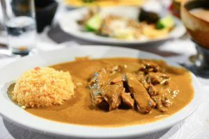

Algunos platillos tradicionales de Chiapas
La gastronomía es el arte de usar los alimentos para crear felicidad y aun mas si el platillo es uno tipico o tradicional dentro de los alimentos de chiapas detras hay una gran historia por conocer.Unos de los platillos mas conosidos son;
los Tamales Chiapanecos
Probablemente para estas alturas ya sepas que el tamal es un platillo icónico de México y que existen miles de variantes, por eso, para hacerlo simple te voy a mencionar los tamales característicos de la región de Chiapas:
 °Tamales de chipilin
°Tamales de chipilin
°Tamal de mole
°Patzito
°Tamal de azafran
°Tamal de cambray
°Tamal de momo
°Tamal de bola
Nucú

Sabemos que México puede ser un país exótico para comer y por eso no podemos dejar de mencionar a las hormigas voladoras.Si quieres aventurarte un poco debes probar el Nucú, lo malo de los platillos con nucú es que sólo se pueden conseguir en época de lluvia, Junio y Julio.Pero si tienes suerte y te animas puedes encontrar hasta helado de Hormiga.
Mole Chiapaneco
 Moles hay miles y Chiapas tiene uno propio. Siempre vas a encontrar moles distintos si viajas por México y por eso, otra recomendación para comer en Chiapas es el mole Chiapaneco.
Moles hay miles y Chiapas tiene uno propio. Siempre vas a encontrar moles distintos si viajas por México y por eso, otra recomendación para comer en Chiapas es el mole Chiapaneco.
Huevos a la chiapaneca

También como parte de la gastronomía de Chiapas tenemos que mencionar los Huevos a la Chiapaneca.Los huevos a la chiapaneca son huevos con frijoles caldosos y pedazos de tostadas acompañados de cebolla, chile crema, platano macho o básicamente con lo que lo quieras acompañar.Acá entre nos, son muy parecidos a los huevos con tortilla.
Cochito horneado

Este platillo típico de Chiapas es característico de una fiesta chiapaneca que se celebra en Enero. Por consecuencia es fácil comerlo en esta época pero puede ser difícil de encontrar en otras fechas.El platillo es: cerdo horneados con hierbas aromáticas, aderezado con una salsa especial que lleva especias y chile ancho y se suele acompañar con cebolla, rábano arroz y lechuga.
Pepita con tasajo

Uno de los platillos típicos de Chiapas más destacados y, probablemente uno que deberías poner bien arriba en tu lista de comidas por probar, es la pepita con tasajo.Considéralo como uno de los platillos más importantes dentro de la gastronomía de Chiapas.El sabor es único y se ha ganado una excelente reputación dentro de Chiapas. El tasajo es carne seca y se prepara con arroz, achiote, semillas de calabaza, tomates, cebolla y manteca de cerdo.
¿Dónde comerlo? Se puede encontrar en Chiapa de Corzo
Queso relleno de Ocosingo

Un comida típica de Chiapas que viene de un municipio en particular (Ocosingo) pero que ha obtenido tal fama que hoy se considera como un clásico.
¿Cómo se prepara? No tengo ni idea, pero se que tiene queso, cerdo, jitomate, cebolla, aceitunas, chiles serranos, especias, hierbas y almendras.
Chipilin con bolitas

Desde mi punto de vista, este es el clásico de clásicos dentro de los platillos típicos de Chiapas.Chipilín y Maíz, los 2 alimentos más característicos del estado en un sólo platillo.
¿Dónde comerlo? Aunque se puede encontrar en todo el estado, la parte centro es el lugar dónde es más fácil conseguirlo
Caldo de Shuti

Otro platillo exótico que uno debe considerar dentro de la gastronomía chiapaneca es el caldo de caracol de agua dulce, en otras palabras, el Caldo de ShutiUna sopa deliciosa y muy característica de la región, este es otro de los platillos importantes de Chiapas así que no te lo pierdas.